Wed, 07 Mar 2012 10:05:14 GMT
Acer no hace dinero con ultrabooks
Acer no hace dinero con ultrabooks
Que los ultrabooks están aquí para quedarse no lo duda nadie, pero la historia de estos portátiles ultraligeros y delgados parece no tener fin. Una iniciativa de Intel y algunos fabricantes para crear portátiles más delgados tal y como Apple predijo con el MacBook Air, se empezó a lanzar una campaña para que Intel fabricase procesadores más baratos e incluso subvencionar los procesadores a fabricantes para que lograsen crear estos portátiles a un precio mucho más bajo que el MacBook Air y así aumentar la competencia. El presidente Global de...
Que los ultrabooks están aquí para quedarse no lo duda nadie, pero la historia de estos portátiles ultraligeros y delgados parece no tener fin. Una iniciativa de Intel y algunos fabricantes para crear portátiles más delgados tal y como Apple predijo con el MacBook Air, se empezó a lanzar una campaña para que Intel fabricase procesadores más baratos e incluso subvencionar los procesadores a fabricantes para que lograsen crear estos portátiles a un precio mucho más bajo que el MacBook Air y así aumentar la competencia.
El presidente Global de Acer, Jianren Weng, ha reiterado algo en el CeBIT (que nos está trayendo muy pocas novedades este año) que ya había comentado, los precios de los ultrabooks deben caer drásticamente, tanto o más como al nivel de los portátiles más tradicionales y mucho más gordos y pesados. A la línea de los US$500. Teniendo en cuenta que ahora mismo se encuentran ultrabooks por unos US$800 o unos 800€ en tiendas de Europa, es evidente que debes de querer mucho Windows para no gastar un poco más e ir a por un MacBook Air.
Por ejemplo, con el Acer Aspire S3 (que reseñamos en Gizmología), Acer en teoría al precio que está marcado en el mercado, no ganaría mucho dinero o directamente no tendría ingresos, algo que cuesta creer por parte de Acer. Teniendo en cuenta que los ultrabooks están aun en su primera o segunda generación en cuando a equipos PC se refiere, los componentes y la fabricación debería quedar por debajo de los 500 euros, lo que haría que la ganancia para Acer o cualquier otra empresa fuese suficientemente interesante.
Lo preocupante es que esto repercuta directamente en algo que podría llevar al traste los planes de Intel y otros fabricantes: la rebaja de materiales. Si se empieza a fabricar ultrabooks más lentos, con peores materiales y mucho más baratos, por seguro que se van a vender, pero serán malos productos, lo que al final afectará al resto de fabricantes porque el público se hará la idea de que un ultrabook será como un netbook, un producto plasticoso, lento y que finalmente tendrá que pasar a lo que ha estado usando, un portátil más grande, un Mac de mayor calidad en fabricación o directamente ir a por una tablet.

Wed, 07 Mar 2012 02:01:50 GMT
Nintendo 3DS: 4.5 millones de unidades vendidas antes del primer año en EE.UU.
Nintendo 3DS: 4.5 millones de unidades vendidas antes del primer año en EE.UU.
Con todo orgullo claro está, Nintendo publica las ventas que ha logrado obtener antes de cumplir su primer año la Nintendo 3DS en EE.UU.. Un numero que realmente debe haber dibujado una gran sonrisa en Iwata luego de resistirse a cambiar estrategias para evitar la supuesta caída de la empresa desarrollando juegos oficiales para plataformas móviles como iOS y Android. En la nota de prensa Nintendo no dudan en comparar las ventas de la 3DS con Nintendo DS. Por allá, entre 2004 y 2005, Nintendo logró vender 2.3 millones de...
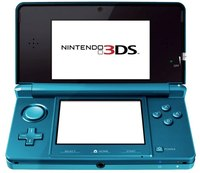
Con todo orgullo claro está, Nintendo publica las ventas que ha logrado obtener antes de cumplir su primer año la Nintendo 3DS en EE.UU.. Un numero que realmente debe haber dibujado una gran sonrisa en Iwata luego de resistirse a cambiar estrategias para evitar la supuesta caída de la empresa desarrollando juegos oficiales para plataformas móviles como iOS y Android.
En la nota de prensa Nintendo no dudan en comparar las ventas de la 3DS con Nintendo DS. Por allá, entre 2004 y 2005, Nintendo logró vender 2.3 millones de unidades de la DS y obviamente es reconfortante para ellos mencionar que han logrado casi doblar las unidades vendidas con las consola portátil más reciente. El primer aninversario de Nintendo 3DS se cumple el 27 de este mes por lo que aún están a tiempo de doblar la cantidad de unidades vendidas pues reportan haber alcanzado los 4.5 millones de unidades vendidas, por lo menos dentro de Norteamérica. Además de las ventas de unidades de la 3DS, también se logró alcanzar la cifra de 9 millones de copias entre los 100 títutos disponibles en comparación a los 5 millones vendidos durantes el primer año de la DS.
Sin duda un gran alcance por parte Nintendo que no duda em compartirlo luego de las grandes criticas sobre la tecnología 3D usada en la consola así como la experiencia de usuario. Sin embargo, como sucedió en Japón, que se lograron vender 5 millones de unidades también en su primer año, se demuestra que posiblemente la tecnología 3D en consolas portátiles no es una idea tan descabellada como se creía.
Iwata siempre declaraba que los ideales de Nintendo siempre son a largo plazo y aunque queda mucho camino por recorrer para alcanzar las 50 millones de unidades vendidas hasta ahora de la Nintendo DS, parece que van por buen camino.
Wed, 07 Mar 2012 00:26:01 GMT
Elgato Thunderbolt SSD: el disco duro externo que vuela ya disponible
Elgato Thunderbolt SSD: el disco duro externo que vuela ya disponible
Si para tus aplicaciones informática, lo que necesitas es un disco duro externo capaz de volar, entonces no busques más y vete directo a por el último HDD externo presentado por la famosa casa Elgato. Nos referimos al nuevo Thunderbolt SSD, un equipo de tamaño compacto y que basado en tecnología SSD, permitirá que tus archivos literalmente…vuelen. Aunque presentado el pasado mes de enero, no ha sido hasta esta misma semana, que por fin está disponible para su venta. Os recuerdo que el equipo se basa en conseguir la mayor...
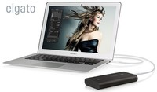
Si para tus aplicaciones informática, lo que necesitas es un disco duro externo capaz de volar, entonces no busques más y vete directo a por el último HDD externo presentado por la famosa casa Elgato. Nos referimos al nuevo Thunderbolt SSD, un equipo de tamaño compacto y que basado en tecnología SSD, permitirá que tus archivos literalmente…vuelen.
Aunque presentado el pasado mes de enero, no ha sido hasta esta misma semana, que por fin está disponible para su venta. Os recuerdo que el equipo se basa en conseguir la mayor rapidez del mercado gracias a la unión de la tecnología de almacenamiento más rápida del momento (memoria SSD), con el conector también más rápido del oeste: un Thunderbolt.
Aunque como todo, también cuenta con sus problemillas. Por ejemplo, no tenemos la posibilidad de conectarlo en cadena, pero seguro que será una nimiedad, si tenemos en cuenta que gracias a él tendremos velocidades de hasta 270MB/s, algo impensable en una simple conexión USB. Además se alimenta a través del propio conector Thunderbolt, por lo que su portabilidad es máxima. Disponible en versiones de 120GB y 240GB, el equipo ya se encuentra disponible a precios respectivos de $429 y $699.
Tue, 06 Mar 2012 22:03:42 GMT
Nuevos servidores HP con 512GB de Ram y hasta 16 cores
Nuevos servidores HP con 512GB de Ram y hasta 16 cores
HP ha vuelto a girar el rizo con la presentación de tres nuevos equipos dentro de sus servidores Serie Z. Todo ellos con la última tecnología del momento, los nuevos modelos añadidos al catálogo son los equipos Z420, Z620 y Z820 que desde luego no dejarán indiferente a nadie, tanto por prestaciones como por fiabilidad. Para esta nueva serie, HP utiliza la gama de procesadores E5-2600 de Intel, que incluyen hasta 8 núcleos por procesador. Las configuraciones, aunque cuentan con equipos de gama básica (como el z420) pueden llegar hasta...
HP ha vuelto a girar el rizo con la presentación de tres nuevos equipos dentro de sus servidores Serie Z. Todo ellos con la última tecnología del momento, los nuevos modelos añadidos al catálogo son los equipos Z420, Z620 y Z820 que desde luego no dejarán indiferente a nadie, tanto por prestaciones como por fiabilidad.
Para esta nueva serie, HP utiliza la gama de procesadores E5-2600 de Intel, que incluyen hasta 8 núcleos por procesador. Las configuraciones, aunque cuentan con equipos de gama básica (como el z420) pueden llegar hasta configuraciones realmente impresionantes como la del tope de gama z820. Este último equipo permite incluir doble procesador en placa (con lo cual se llega hasta los 16 núcleos) y nada menos que 512GB de memoria. Sí, has leído bien…Gigas. Para ello, se “unen” entre si dos placas base que cuentan con nada menos que 16 módulos de 32GB DDR3 cada uno. Evidentemente semejante potencia se paga, y el equipo llega hasta los $2299
En la gama media, el Z620 se nos queda (es un decir) en tan sólo 96GB de RAM con una potencia de almacenamiento de 11TB; mientras que el equipo de entrada (el Z420) está pensado para labores básicas de servidor, por lo que nos tendremos que conformar con sus 64GB de memoria, los 11TB de espacio de almacenamiento, un sólo procesador Xeon E5 y una gráfica Quadro 5000. Con precios respectivos de $1649 y $1199. Si el último juego del momento se le atraganta a tu equipo, ya sabes lo que puedes buscar para remediarlo…
Tue, 06 Mar 2012 20:24:56 GMT
Microsoft y su proyector interactivo para crear superficies ¿táctiles?
Microsoft y su proyector interactivo para crear superficies ¿táctiles?
Mientras que ya nos habían mostrado cómo un sistema con pantalla transparente es capaz de mostrar un escritorio de trabajo, el día de hoy Microsoft Research muestra que estarían a un paso de crear el dispositivo ideal para convertir cualquier superficie (supongo que plana hasta que no den el paso a la AR) en una interfaz táctil. Claro, para lograr todo esto se tiene que primero comenzar con equipos de tamaño mayor a como se lo imaginan que podría llegar a ser el final, para ello combinan una cámara de...
Mientras que ya nos habían mostrado cómo un sistema con pantalla transparente es capaz de mostrar un escritorio de trabajo, el día de hoy Microsoft Research muestra que estarían a un paso de crear el dispositivo ideal para convertir cualquier superficie (supongo que plana hasta que no den el paso a la AR) en una interfaz táctil.
Claro, para lograr todo esto se tiene que primero comenzar con equipos de tamaño mayor a como se lo imaginan que podría llegar a ser el final, para ello combinan una cámara de profundidad con capacidades de Kinect, un pico-proyector y un brazo sobre tu hombro para creerte el verdadero pirata informático (sólo falta el parche en el ojo y quedas perfecto.
Tras unir los aparatos, se logra que la proyección y la cámara de profundidad se combinen para detectar los movimientos de la mano y así para emular la interacción como si de una pantalla táctil se tratase. Como podemos ver se trata de interacción por detección de movimientos y no mediante el toque pero es la sensación que da al ver el vídeo. Ahora, yendo un poco más allá de lo que vemos, en Microsoft esperan que puedan minimizar el proyecto y quizás llegar al tamaño del Galaxy Beam, que sólo le faltaría la integración de una cámara de profundidad (que al parecer ya están desarrollando) y el software adecuado*. De lograrlo sería el gadget ideal para fanfarronear.
Tue, 06 Mar 2012 17:09:25 GMT
Acer V3: Una nueva gama de laptops entre las 14 y las 17 pulgadas
Acer V3: Una nueva gama de laptops entre las 14 y las 17 pulgadas
Acer continúa lanzando nuevas laptops y esta vez presentó la gama V3 a través de la cual presentará varios nuevos modelos entre los que habrá versiones de 14, 15.6 y 17.3 pulgadas, que se tratan de las que más se venden en el mercado actual. La nueva línea vendrá con diferentes procesadores y GPUs. Sea como sea, la familia de procesadores que utilizará Acer es la de los Intel Core y las placas de video serán de de las Nvidia GeForce GT. Algunos modelos fueron creados, sobre todo las de...
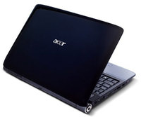
Acer continúa lanzando nuevas laptops y esta vez presentó la gama V3 a través de la cual presentará varios nuevos modelos entre los que habrá versiones de 14, 15.6 y 17.3 pulgadas, que se tratan de las que más se venden en el mercado actual.
La nueva línea vendrá con diferentes procesadores y GPUs. Sea como sea, la familia de procesadores que utilizará Acer es la de los Intel Core y las placas de video serán de de las Nvidia GeForce GT.
Algunos modelos fueron creados, sobre todo las de 17.3 pulgadas, para mejorar las capacidades de entretenimiento. Esta versión tiene una pantalla Acer CineCrystal HD+ con un LED backlit de 1600x900 píxeles. Entra bajo la gama de los Dolby Home Theater v4 y tiene lector de Blu-ray. Además, lógico, tiene salida HDMI para conectarlo a una pantalla más grande.
Toda la serie V3 viene con WiFi, puerto Ethernet, cámaras Acer Crystal Eye HD, lector de tarjetas de memoria, conectividad Bluetooth 4.0, USB 2.0 y 3.0 que permitirán, además, recargar tus dispositivos aunque la laptop esté apagada. Finalmente el touchpad tendrá soporte multitáctil y vendrá en negro, dorado, gris y plateado.
Tue, 06 Mar 2012 16:06:08 GMT
Sigue la presentación del iPad HD en AppleWeblog mañana miércoles
Sigue la presentación del iPad HD en AppleWeblog mañana miércoles
Mañana miércoles se presenta la tercera generación del iPad, la tablet que revolucionó el mundo de la informática. Una tercera generación que parece llegará con novedades como una pantalla de alta resolución como nunca antes se había visto, algo revolucionario como el iPhone 4 introdujo con su Retina Display. No te pierdas la presentación que AppleWeblog hará en directo. Aquí tienes los horarios para que no te pierdas nada. San Francisco 10:00 México 12:00 Colombia 12:00 Argentina 14:00 Chile 14:00 España 19:00 No hace falta decir que en Gizmología tendrás...
Mañana miércoles se presenta la tercera generación del iPad, la tablet que revolucionó el mundo de la informática. Una tercera generación que parece llegará con novedades como una pantalla de alta resolución como nunca antes se había visto, algo revolucionario como el iPhone 4 introdujo con su Retina Display.
No te pierdas la presentación que AppleWeblog hará en directo. Aquí tienes los horarios para que no te pierdas nada.
- San Francisco 10:00
- México 12:00
- Colombia 12:00
- Argentina 14:00
- Chile 14:00
- España 19:00
No hace falta decir que en Gizmología tendrás toda la información según vaya ocurriendo. Miércoles 7 de marzo, veremos que depara el iPad HD.
Tue, 06 Mar 2012 13:03:51 GMT
Deutsche Telekom logra alcanzar 512Gbps por un solo cable de fibra óptica
Deutsche Telekom logra alcanzar 512Gbps por un solo cable de fibra óptica
La fibra óptica es ahora mismo la mejor tecnología para conectarte a internet, aunque en muchos países la fibra óptica es algo de hace bastante tiempo, dando soporte para televisión e internet, en España por ejemplo la fibra apenas lleva poco más de una década usándose para dar conexión a internet a casas, no a empresas o para interconectar grandes nodos. Por ahora son algunas operadoras pequeñas de cable o generalistas como Ono o Movistar en España quienes dan servicios de fibra, con velocidades que no suelen superar los 100Mbps,...
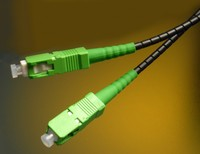
La fibra óptica es ahora mismo la mejor tecnología para conectarte a internet, aunque en muchos países la fibra óptica es algo de hace bastante tiempo, dando soporte para televisión e internet, en España por ejemplo la fibra apenas lleva poco más de una década usándose para dar conexión a internet a casas, no a empresas o para interconectar grandes nodos.
Por ahora son algunas operadoras pequeñas de cable o generalistas como Ono o Movistar en España quienes dan servicios de fibra, con velocidades que no suelen superar los 100Mbps, que por lo menos se oferten, por ahora comercialmente solo ofrecen 50Mbps reales y que de verdad lo son (usuario satisfecho de fibra aquí), pero operadoras como Movistar ofrecen conexiones de 100Mbps en fase de pruebas, llegando a unos 70-80Mbps en los mejores casos. En otros países como Argentina, operadoras como Fibertel da conexiones de 30Mbps.
La fibra óptica es capaz de soportar mucho más ancho de banda, pero a nivel teórico, aunque la operadora alemana Deutsche Telekom ha conseguido alcanzar velocidades de hasta 512Gbps por un solo hilo de fibra, marcando así un nuevo récord. Esto significa que con un solo cable de fibra óptica, teóricamente, tu conexión podría llegar a tener medio terabyte de banda ancha. Aunque según parece, usables llegan a ser 400Gbps a una distancia de 734 kilómetros entre la central y el punto de recepción.
Esto va a significar dos cosas para Deutsche Telekom, primero que podrá ofrecer muchísimo más ancho de banda a sus usuarios sin preocuparse durante mucho tiempo de tener que actualizar su fibra óptica por más cables para que tengan más ancho de banda. También podrán aprovechar estas velocidades para conectar sus torres de telefonía móvil de T-Mobile con más capacidad. Pero al final, en lo que se transforma en un futuro no muy lejano es que dentro de poco la velocidad de conexión empiece a ser un problema del pasado y que al tener conexión a internet en tu casa, lo de “velocidad lenta” no pase más.
Vía: GigaOM
Tue, 06 Mar 2012 04:00:38 GMT
MSI GT60 y GT70: laptops para gamers con Ivy Bridge y “SupeRaid”
MSI GT60 y GT70: laptops para gamers con Ivy Bridge y “SupeRaid”
MSI es otra que hace presencia durante este CeBIT 2012 en Hanover, Alemania con la intención de captar la atención de gamers con los últimos procesadores de Intel. Nos muestran dos nuevas laptops, la MSI GT60 con una pantalla HD de 15,6 pulgadas y su hermana mayor, la MSI GT70 que cuenta con una pantalla de 17.3 pulgadas. A pesar de que no hay detalles de la especificaciones, se espera que se fusionen con las gráficas Kepler NVIDIA (GeForce 600M series) y, por supuesto, los cuatro núcleos de Intel. Entendiendo...
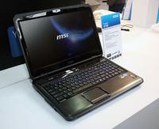
MSI es otra que hace presencia durante este CeBIT 2012 en Hanover, Alemania con la intención de captar la atención de gamers con los últimos procesadores de Intel. Nos muestran dos nuevas laptops, la MSI GT60 con una pantalla HD de 15,6 pulgadas y su hermana mayor, la MSI GT70 que cuenta con una pantalla de 17.3 pulgadas.
A pesar de que no hay detalles de la especificaciones, se espera que se fusionen con las gráficas Kepler NVIDIA (GeForce 600M series) y, por supuesto, los cuatro núcleos de Intel. Entendiendo que como gamers preferimos la noche, se incluyen en cada una teclado retroiluminados SteelSeries y sistemas de sonido de Dynaudio.
En cuanto al almacenamiento, se pueden configurar con hasta 1.5TB divididos en tres unidades. Para ello se tenemos un disco SATA para la unida primeria y dos unidades SSD opcionales para obtener mayor velocidad y almacenamiento. MSI asegura que al estar configuradas bajo “SuperRAID” la velocidad de disco es capaz de llegar hasta los 750 MB por segundos en complemento con cuatro carriles para memorias RAM para un limite de 16GB.
El precio y la disponibilidad aún no se anuncian, pero esperemos que dentro de poco tengamos mayores detalles que nos demuestren el rendimiento. Mientras tanto, nos conformamos con los vídeos que graban desde Netbook Italia.
Tue, 06 Mar 2012 02:09:36 GMT
Consiguen envíar dos señales en una misma frecuencia
Consiguen envíar dos señales en una misma frecuencia
Uno de los mayores problemas que tenemos en el mundo tecnológico, es el limitado ancho de banda con el que contamos para los diversos equipamientos que se utilizan en la actualidad. Esto provoca muchas interferencias y sobre todo problemas a la hora de operar en un espectro tan reducido de frecuencias. Prueba de ello es el famoso Dividendo Digital en el que estamos sumidos actualmente en España. Pero parece que los investigadores están poniendo los cimientos para que el ancho de banda deje de ser un problema. Por lo menos,...
Uno de los mayores problemas que tenemos en el mundo tecnológico, es el limitado ancho de banda con el que contamos para los diversos equipamientos que se utilizan en la actualidad. Esto provoca muchas interferencias y sobre todo problemas a la hora de operar en un espectro tan reducido de frecuencias. Prueba de ello es el famoso Dividendo Digital en el que estamos sumidos actualmente en España. Pero parece que los investigadores están poniendo los cimientos para que el ancho de banda deje de ser un problema. Por lo menos, eso es lo que se desprende de las investigaciones llevadas a cabo por el equipo de Fabrizio Tamburini.
En una reciente publicación aparecida en el New Journal of Physics, se establecen las bases de lo que podría ser el Santo Grial de las ondas de radio del futuro: la posibilidad de enviar más de una señal en la misma frecuencia y sin interferencias entre ellas. Aunque por el momento esta técnica está todavía en pañales, al parecer en experimentos prácticos llevados a cabo el año pasado, pudieron enviar dos señales Wi-Fi de la misma frecuencia, en la banda de 2.4GHz, a una distancia de unos 442 metros sin mayores problemas.
El sistema parece basarse en que se “envían” dos señales con diferentes estados de momento angular orbital (yo, la verdad, no soy físico y desconozco lo que puede significar eso) de modo que pueden “ir” sobre la misma frecuencia pero sin interferirse entre ellas. Si esta tecnología llega a buen puerto y se consigue poner en práctica, supondría una verdadera revolución en las telecomunicaciones móviles, puesto que pondría punto y final a la escasez de espectro radioeléctico con el que llevamos vivimos toda nuestra vida.
Tue, 06 Mar 2012 00:06:58 GMT
Gigabyte GB-AEGT, todo-en-uno orientado a gamers con slot PCI-Express
Gigabyte GB-AEGT, todo-en-uno orientado a gamers con slot PCI-Express
Gigabyte siempre tiene un as en la manga en lo que a ordenadores se refiere; la firma está preparando un nuevo equipo “todo-en-uno” bastante interesante, en esta ocasión orientado a los más jugones, que podrán disfrutar en un formato distinto sus videojuegos gracias al slot PCI Express disponible capaz de acomodar tarjetas gráficas de doble ranura. El nuevo Gigabyte GB-AEGT incorpora una pantalla multitáctil de 24 pulgadas FullHD con retroiluminación LED tras la que se asienta todo el chasis de esta máquina, que incluye una placa base Mini ITX con...
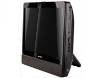
Gigabyte siempre tiene un as en la manga en lo que a ordenadores se refiere; la firma está preparando un nuevo equipo “todo-en-uno” bastante interesante, en esta ocasión orientado a los más jugones, que podrán disfrutar en un formato distinto sus videojuegos gracias al slot PCI Express disponible capaz de acomodar tarjetas gráficas de doble ranura.
El nuevo Gigabyte GB-AEGT incorpora una pantalla multitáctil de 24 pulgadas FullHD con retroiluminación LED tras la que se asienta todo el chasis de esta máquina, que incluye una placa base Mini ITX con el chipset H61 de Intel con socket LGA-1155, capaz de albergar procesadores Core i3/i5/i7 y hasta 8GB de memoria RAM DDR3 en dos slots. El equipo, bastante más grueso de lo habitual en este tipo de unidades debido al soporte para tarjetas gráficas de gran tamaño, se comercializa en formato “barebone”, es decir, tan solo con los componentes esenciales, e incorpora ranuras para un disco duro o unidad SSD de 2.5 pulgadas y uno de 3.5 pulgadas, dos puertos mini PCI-Express y unidad óptica “slim”. En cuanto a conectividad y expansíon, se incluyen dos puertos USB 3.0, 5 puertos USB 2.0, lector de tarjetas 4 en 1, puerto Ethernet Gigabit y conectividad inalámbrica con Wi-Fi 802.11b/g/n y Bluetooth 2.1 (opcionales) junto a la típica Webcam, prescindible pero inequívocamente presente en todo equipo all in one o portátil que se precie.
En cuanto a la alimentación, el equipo cuenta con una fuente de 180W, con lo que, pese al soporte para GPUs de gran formato, no se podrán instalar unidades de gran rendimiento, aunque será suficiente para unidades “modestas” pero capaces de hacer frente a juegos de última generación prescindiendo de grandes alardes.
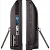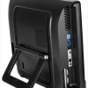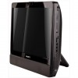
Mon, 05 Mar 2012 22:16:23 GMT
JVC añade tres monitores broadcast a su serie ProHD LCD
JVC añade tres monitores broadcast a su serie ProHD LCD
Ahora que cada vez es más frecuente grabar vídeo en Alta Definición ya sea con pequeñas videocámaras prosumer o incluso con DSLR avanzadas, nunca está de más la posibilidad de contar con un buen monitor que nos permita ver con claridad si estamos haciendo foco perfectamente o cualquier otra imperfección de la imagen. Justo esa es la función principal de los tres nuevos equipos que acaba de presentar JVC en su serie de monitores ProHD LCD. Los nuevos modelos presentados son los monitores DT-X71C, DT-X71H y DT-X71F.Todos ellos cuentan con...
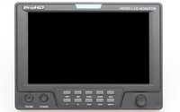
Ahora que cada vez es más frecuente grabar vídeo en Alta Definición ya sea con pequeñas videocámaras prosumer o incluso con DSLR avanzadas, nunca está de más la posibilidad de contar con un buen monitor que nos permita ver con claridad si estamos haciendo foco perfectamente o cualquier otra imperfección de la imagen. Justo esa es la función principal de los tres nuevos equipos que acaba de presentar JVC en su serie de monitores ProHD LCD.
Los nuevos modelos presentados son los monitores DT-X71C, DT-X71H y DT-X71F.Todos ellos cuentan con pantalla de 7 pulgadas y resolución nativa de 1024x600 píxeles, pero admiten todo tipo de señales permitiendo fuentes 480i, 720p y 1080p. Sus principales diferencias se encuentran en el conexionado: el primero de ellos sólo cuenta con HDMI, mientras que el intermedio añade además 3 tomas HD-SDI (2 entradas y 1 salida), siendo finalmente el último de ellos el más completo pues añade un loop de salida HD-SDI y entrada HDMI con salida convertida a SDI.
Cuentan además con todo tipo de ayudas para el rodaje, como pueden ser inversión de imagen (muy útil para DSLR), áreas de seguridad, markers, underscan, overscan y hasta luz “tally”. Con un ángulo de visión de 160º incluye herramientas de análisis de señal como Wform, vectroscopio, histograma RGB, peaking, zebra, modo azul o generador de barras entre otros. Indicar por último que permiten la alimentación tanto desde baterías, como desde tomas especial XLR de 12v. Los equipos ya se encuentran actualmente a la venta, con precios respectivos de $595, $1095 y $1695.
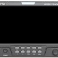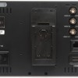
Mon, 05 Mar 2012 20:11:11 GMT
AOC d2357Ph: monitor Full HD de 23” y 10 mm de grosor
AOC d2357Ph: monitor Full HD de 23” y 10 mm de grosor
Siempre que estamos a horas de comenzar alguna feria ciertos fabricantes comienzan a adelantarse anunciando lo que se verá una vez dentro del lugar. Uno de los que no esperó la luz verde fue AOC al presentar un nuevo monitor con capacidades 3D, marco y grosor bastante delgados y diseño práctico. Se trata del AOC d2357Ph, una pantalla de 23 pulgadas con retro-iluminación W-LED y resolución Full HD de 1920 x 1080 píxeles. AOC hace alarde la rapidez para aprovechar el software de conversión para pasar imágenes o vídeos 2D...
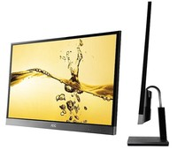
Siempre que estamos a horas de comenzar alguna feria ciertos fabricantes comienzan a adelantarse anunciando lo que se verá una vez dentro del lugar. Uno de los que no esperó la luz verde fue AOC al presentar un nuevo monitor con capacidades 3D, marco y grosor bastante delgados y diseño práctico.
Se trata del AOC d2357Ph, una pantalla de 23 pulgadas con retro-iluminación W-LED y resolución Full HD de 1920 x 1080 píxeles. AOC hace alarde la rapidez para aprovechar el software de conversión para pasar imágenes o vídeos 2D a 3D con sólo apretar una tecla, lamentablemente es necesario el uso de gafas (polarizadas) para poder aprovechar el contenido en tres dimensiones.
Sin embargo, a pesar de necesitar gafas, el monitor destaca su diseño, que en parte es lo que más llama la atención, cuenta con un grosor de 10,6 mm y envuelve el panel en un marco (superior y lateral) de 5.8 milímetros. El ángulo de visión para el contenido 3D es de 170°h/160°v, mientras que el tiempo de respuesta es de 2ms, el contraste dinámico alcanza 20.000.000:1 y el nativo en 1.000:1. Sobre las conexiones, se integran dos puertos HDMI 1.4 y un puerto VGA.
Ahora, sobre el diseño, que busca ser versátil, puede ser aprovechado con la base o bien sin ella para colgarlo como si de un cuadro más se tratase. Por ahora sólo hay anuncio y disponibilidad para el mes de abril, nada de precio recomendado.
Wed, 07 Mar 2012 03:12:19 GMT
Acer Aspire V5: más que un netbook pero menos que un Ultrabook
Acer Aspire V5: más que un netbook pero menos que un Ultrabook
Mientras que el dilema de llamar o no Ultrabook a un portátil parece ser decisión de Intel y no del fabricante, no cabe la menor duda de que la influencia de esta gama impulsada por Intel sirve de ejemplo para comenzar a crear equipos realmente portátiles. Hace unas horas Acer mostró una laptop con pantalla de mayor tamaño, mientras que poco después develan un modelo más pequeño con prestaciones aún por detallar pero que sin duda buscará su puesto entre la gama actual de ordenadores delagados y ligeros. Se trata...
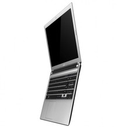
Mientras que el dilema de llamar o no Ultrabook a un portátil parece ser decisión de Intel y no del fabricante, no cabe la menor duda de que la influencia de esta gama impulsada por Intel sirve de ejemplo para comenzar a crear equipos realmente portátiles. Hace unas horas Acer mostró una laptop con pantalla de mayor tamaño, mientras que poco después develan un modelo más pequeño con prestaciones aún por detallar pero que sin duda buscará su puesto entre la gama actual de ordenadores delagados y ligeros.
Se trata de la Acer Aspire V5, una gama que cuenta variedad de tamaños comenzando por 11.6”, pasando 14”y terminando en tamaños de pantalla de hasta 15.6 pulgadas. En su interior integrarían procesadores Intel Core pero no se especifican los modelos, así como la potencia en gráficas de NVIDIA GeForce GT. Como lo dije al inicio no hay grandes detalles sobre los componentes de hardware u otras características, pero afortunadamente adelantan que contarán con puertos USB 3.0 en combinación con 21 milímetros de grosor para el modelo más pequeño, mientras que el más grande llegaría hasta los 23 milímetros.
El diseño parece una versión gruesa de S3, además vendrá en variedad de colores como se puede apreciar en la galería de imágenes y estaría disponible a mediados de este año.
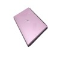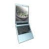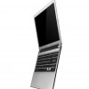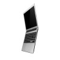
Wed, 07 Mar 2012 01:19:07 GMT
Adobe actualiza Lightroom a su versión 4
Adobe actualiza Lightroom a su versión 4
Iba siendo hora y al final ya ha llegado. Tras más de dos meses en versión beta, por fin Adobe acaba de lanzar la versión retail de su afamado programa fotográfico Adoble Lightroom V.4. Os recuerdo que el punto fuerte de la saga Lightroom, es que nos permite ajustar, editar, clasificar y catalogar todo nuestro archivo fotográfico de manera eficiente y sumamente fácil. Pero no podía ser de otra forma, esta nueva versión incluye algunas novedades de lo más esperadas. Entre ellas, destacan por derecho propio, la inclusión de soporte...
Iba siendo hora y al final ya ha llegado. Tras más de dos meses en versión beta, por fin Adobe acaba de lanzar la versión retail de su afamado programa fotográfico Adoble Lightroom V.4. Os recuerdo que el punto fuerte de la saga Lightroom, es que nos permite ajustar, editar, clasificar y catalogar todo nuestro archivo fotográfico de manera eficiente y sumamente fácil.
Pero no podía ser de otra forma, esta nueva versión incluye algunas novedades de lo más esperadas. Entre ellas, destacan por derecho propio, la inclusión de soporte para vídeo (con soporte para exportado bajo H.264, así como volcado directo a Facebook o Flickr), el autoajuste o el soporte para el formato DNG. Por si todo ello no fuera poco, se añade la posibilidad de realizar desde dentro del propio programa albunes de fotos, por lo que ya no tendrás que recurrir a terceros para crearlos.
Si te quieres hacer con el programa y esta es tu primera compra, tendrás que dejarte los $149 de rigor (bastante menos que los $300 que costaba la versión anterior). Eso sí, si ya eres fiel a la casa y sólo es un update, entonces te ahorrarás un pico, puesto que sólo serán $79. El programa está ya listo para su descarga desde la página de Adobe.
Tue, 06 Mar 2012 23:31:05 GMT
ROCCAT Phobo: el teclado que convierte tu iPhone en un display secundario
ROCCAT Phobo: el teclado que convierte tu iPhone en un display secundario
El sueño de muchos gamers profesionales está a punto de convertirse en realidad. Nos llega de la casa ROCCAT y consiste en dos elementos que interactúan entre sí (nunca mejor dicho) y que llevará tus partidas a un nivel superior. Nos referimos al sistema PowerGrid y al teclado ROCCAT Phobo: juntos convertirán a tu PC en una extensión de ti mismo. El sistema pretende conseguir una pantalla adicional para tu PC, de modo que puedas controlarlo en todo momento de forma fácil, sencilla y sobre todo, a golpe de dedo....
El sueño de muchos gamers profesionales está a punto de convertirse en realidad. Nos llega de la casa ROCCAT y consiste en dos elementos que interactúan entre sí (nunca mejor dicho) y que llevará tus partidas a un nivel superior. Nos referimos al sistema PowerGrid y al teclado ROCCAT Phobo: juntos convertirán a tu PC en una extensión de ti mismo.
El sistema pretende conseguir una pantalla adicional para tu PC, de modo que puedas controlarlo en todo momento de forma fácil, sencilla y sobre todo, a golpe de dedo. Se basa en dos partes: por un lado un software que atiende al nombre de Power Grid y que será gratuito en su lanzamiento y por otro, una serie de hardware que se comunicará con ese software y nos permitirá que nuestro PC interactúe con él. Para hacer las cosas más fáciles, han elegido la plataforma iOS como soporte, por lo que gracias a los chicos de ROCCAT, podrás conseguir que tu iPhone/iPod se convierta en una mini-pantalla adiccional con la que tunear cualquier apartado de tu ordenador de sobremesa.
Así, gracias a Power Grid, podrás tener actualizaciones en tiempo real de redes sociales como Facebook, Twitter, Skype o TeamSpeak; podrás convertir tu iPhone en un monitor de las estadísticas de tu equipo como temperatura, revoluciones,etc; controlar todos los aspectos del sonido y hasta crear “macros” personalizados que automaticen con un sólo toque de dedo., esas tareas que suelen ser tediosas.
En cuanto al hardware que integrará el dispositivo de Apple, por el momento ya hay pensado un teclado que con dock integrado, te permitirá tener una pequeña pantalla como si de una extensión del mismo se tratase. Atiende al nombre de ROCCAT Phobo y además de cargarte el móvil, permitirá realizar otras acciones, como contestar llamadas con skype. Saldrá a la venta por $129. La verdad, es que estoy seguro que será el sueño de muchos jugones profesionales.
Tue, 06 Mar 2012 21:02:06 GMT
Canon PIXMA MX892: Una todo-en-uno que imprime desde la nube
Canon PIXMA MX892: Una todo-en-uno que imprime desde la nube
Las impresoras son demonios enviados por el diablo que hacen que configurarlas de manera correcta y sin tener problemas con los drivers sea algo casi imposible. Sea como sea, las seguimos necesitando y diferentes empresas siguen presentando diferentes modelos. En esta oportunidad le tocó a Canon, que lanzó una todo-en-uno que además permite imprimir directamente desde la nube. Si lo que andabas necesitando era una impresora todo-en-uno (y por todo en uno me refiero a que escanea y funciona también como fax) inalámbrica probablemente la PIXMA MX892 de Canon te...
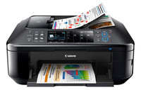
Las impresoras son demonios enviados por el diablo que hacen que configurarlas de manera correcta y sin tener problemas con los drivers sea algo casi imposible. Sea como sea, las seguimos necesitando y diferentes empresas siguen presentando diferentes modelos. En esta oportunidad le tocó a Canon, que lanzó una todo-en-uno que además permite imprimir directamente desde la nube.
Si lo que andabas necesitando era una impresora todo-en-uno (y por todo en uno me refiero a que escanea y funciona también como fax) inalámbrica probablemente la PIXMA MX892 de Canon te pueda interesar. Utiliza una tecnología ChromaLife que le permite tener un sistema de 5 tintas que le dará una calidad mucho mayor a las imágenes (9600x2400dpi).
Además tiene una pantalla LCD de 3 pulgadas y, para que se den una idea lo que tarda, imprime fotografías de 4x6 pulgadas a todo color en 20 segundos por página. Pero también le podrás agregar diferentes efectos que vienen con el dispositivo, como fisheye, vintage, Polaroid y más.
Pero lo más interesante que posee es que, a través de la conexión a Internet, se le podrá enviar cosas para que las imprima a través de la nube. Así que si estás en la oficina y necesitas imprimir un documento en tu casa (o viceversa) podrás hacerlo sin problemas. Todo por **US$200. **
Tue, 06 Mar 2012 18:02:08 GMT
Google debe darle información sobre el desarrollo de Android a Apple
Google debe darle información sobre el desarrollo de Android a Apple
La guerra por las patentes cada vez se viene más y más encarnizada y hoy se escribirá uno de sus capítulos más importantes. Los que pelean en esta oportunidad son Google, junto con Motorola, y Apple del otro lado. Aunque sean dos contra uno el que ganó es el de la manzana ya que un juez estadounidense que lleva adelante una de las demandas que Apple tiene contra Motorola determinó que Google, que ahora es dueño de Motorola, tendrá que brindarle a la compañía de Cupertino información en relación al...
La guerra por las patentes cada vez se viene más y más encarnizada y hoy se escribirá uno de sus capítulos más importantes. Los que pelean en esta oportunidad son Google, junto con Motorola, y Apple del otro lado.
Aunque sean dos contra uno el que ganó es el de la manzana ya que un juez estadounidense que lleva adelante una de las demandas que Apple tiene contra Motorola determinó que Google, que ahora es dueño de Motorola, tendrá que brindarle a la compañía de Cupertino información en relación al desarrollo de Android y sobre la compra de Motorola por parte de la gran G.
Esta demanda data del 2010 y todavía no llega a poder solucionarse. Para el juez, llamado Richard A. Posner, que Apple tenga esta información será de gran importancia a la hora del reclamo que está haciendo. Qué está buscando Apple en estos momentos no es claro y no se sabe si estudiarán los planes a futuro de la plataforma móvil de Google o si necesitan el historial del desarrollo hasta la fecha. Lo que están buscando son las patentes que se infringieron.
Esta demanda data de cuando Motorola ni siquiera era de Google y hacía referencia a las terminales que utilizaban el sistema operativo de la empresa de Mountain View. Desde ese momento continúa esta pelea entre ambos y, al parecer, no tendrá un final feliz.
Mientras tanto desde Google no quisieron dar comentarios. Lo único que informaron es que le darán a Apple toda la información que necesiten.
Tue, 06 Mar 2012 16:30:31 GMT
Toshiba ZL2: la TV3D sin gafas de 55” podría estar disponible este mes
Toshiba ZL2: la TV3D sin gafas de 55” podría estar disponible este mes
Generalmente, cuando nos hablan de tecnología 3D en un monitor o pantalla de televisión, lo primero que se nos ocurre es que tenemos que utilizar gafas para poder aprovechar las tres dimensiones y a pesar de que aún predomina la fabricación de pantallas estereoscópicas, poco a poco venimos viendo como los fabricantes han comenzado a optar por pantallas utoestereoscópicas, es decir, que no necesitan de gafas para poder aprovechar la tecnología. Es el caso de la TV 3D de Toshiba 55 pulgadas que no necesita de mediadoras para mostrar sus...
Generalmente, cuando nos hablan de tecnología 3D en un monitor o pantalla de televisión, lo primero que se nos ocurre es que tenemos que utilizar gafas para poder aprovechar las tres dimensiones y a pesar de que aún predomina la fabricación de pantallas estereoscópicas, poco a poco venimos viendo como los fabricantes han comenzado a optar por pantallas utoestereoscópicas, es decir, que no necesitan de gafas para poder aprovechar la tecnología. Es el caso de la TV 3D de Toshiba 55 pulgadas que no necesita de mediadoras para mostrar sus prestaciones.
Bajo el nombre de Toshiba ZL2 la empresa acaba de anunciar la disponibilidad de la próxima TV que más de uno vamos a querer comprar, pero que posiblemente pocos vamos a poder adquirir. No hay grandes detalles de su diseño, pero se conoce que cuenta con gran resolución de 3840 x 2160 píxeles siendo capaz de cambiar entre imágenes 2D a 3D rápidamente.
Durante el IFA 2011 se vio por primera vez y las criticas no fueron muy buenas, al parecer el efecto 3D no era muy pronunciado y en ocasiones no se distinguía se estaba en presencia de imágenes 3D o visualización en 2D. Sin embargo, es información que data de poco más de un año y Toshiba asegura que el motor CEVO multi-core han logrado que el producto final mejore lo que se presentó en 2011.
A partir del 12 de este mes estará disponible para pre-compra en minoristas de Reino Unido con un precio apróximado de 8.000 dólares, que por supuesto requieren de una pronta demostración para saber qué tanto se han mejorado las imágenes en 3D, además de las especificaciones que aún faltan por completar.
Tue, 06 Mar 2012 15:01:50 GMT
Beats lanza un sistema de audio portátil e inalámbrico
Beats lanza un sistema de audio portátil e inalámbrico
Los auriculares Beats son de esos que molestan a quienes están alrededor porque, básicamente, permiten que todos escuchen lo que el usuario está escuchando. Para aquellos que estén cerca es un tanto molesto. Sea como sea, si con esto no alcanza la gente de la compañía creada por Dr. Dre lanzó un Beatbox Portable inalámbrico que permitirá reproducir como el FSM manda. El altavoz tiene un dock para el iPod, un conector de 3.5mm, Bluetooth, un control remoto y un woofer de 5.25 pulgadas que le dará una potencia más...
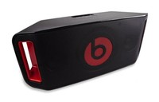
Los auriculares Beats son de esos que molestan a quienes están alrededor porque, básicamente, permiten que todos escuchen lo que el usuario está escuchando. Para aquellos que estén cerca es un tanto molesto. Sea como sea, si con esto no alcanza la gente de la compañía creada por Dr. Dre lanzó un Beatbox Portable inalámbrico que permitirá reproducir como el FSM manda.
El altavoz tiene un dock para el iPod, un conector de 3.5mm, Bluetooth, un control remoto y un woofer de 5.25 pulgadas que le dará una potencia más que interesante. Prometen que tendrá 15 horas de uso con la batería de seis celdas. Por otra parte, también tiene unas manijas para poder transportarlo sin problemas y tendrán que soltar US$399 para poder obtenerlo (a no ser que quieran entrar con armas a la tienda que los venda, pero eso ya va a cuenta suya).
 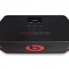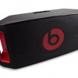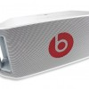
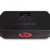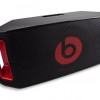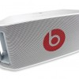
Tue, 06 Mar 2012 10:15:25 GMT
Ahora puedes sentir en tus pulgares los efectos de videojuegos
Ahora puedes sentir en tus pulgares los efectos de videojuegos
En la universidad de Utah han encontrado una nueva forma de que jugar sea una nueva experiencia. Tenemos los controles de toda la vida que nos permiten mover a personajes y objetos por videojuegos, también tenemos sistemas inalámbricos que nos permiten mover nuestro cuerpo y que la videoconsola interprete esos movimientos como con Wii, o directamente con Kinect sin necesidad de ningún tipo de control más que tu cuerpo. Pero cuando se requiere jugar con un control o pad, la respuesta del juego solo se queda en la pantalla y...
En la universidad de Utah han encontrado una nueva forma de que jugar sea una nueva experiencia. Tenemos los controles de toda la vida que nos permiten mover a personajes y objetos por videojuegos, también tenemos sistemas inalámbricos que nos permiten mover nuestro cuerpo y que la videoconsola interprete esos movimientos como con Wii, o directamente con Kinect sin necesidad de ningún tipo de control más que tu cuerpo. Pero cuando se requiere jugar con un control o pad, la respuesta del juego solo se queda en la pantalla y como mucho, en una vibración de vez en cuando en el mando.
Ingenieros de la universidad de Utah encontraron una forma de que la sensibilidad de lo que está pasando en el juego, se traspase al mando. Gracias a unos pequeños motores y sensores en los dos botones de movimiento principales, interpreta acciones de juegos directamente a tus dedos pulgares, sobre todo movimientos.
Pero es una forma muy interesante de interacción que añadir a los juegos, por ejemplo el efecto de olas en un juego donde estés en el mar, o el efecto de bote cuando estás dentro de un tanque y disparas. No es que haga el juego más difícil de controlar, añade una función más de realismo muy interesante.
Tue, 06 Mar 2012 03:01:43 GMT
Gigabyte muestra su Ultrabook y portátil para gaming con Ivy Bridge
Gigabyte muestra su Ultrabook y portátil para gaming con Ivy Bridge
Gigabyte no se sintió en el CES o el Mobile World Congress y si estuvieron no hicieron mucho ruido, sin embargo, a estas horas de la noche nos dan a entender que no volverá a pasar anunciando un par de portátiles con gran potencia, una destinada a formar parte de la familia Ultrabook y otra con ganas de cautivar a gamers. Ambas cuentan con la última generación de procesadores y gráficas bastante potentes, pero al ver las prestaciones queda claro que una está dedica a la portábilidad (o eso intenta)...
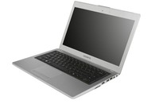
Gigabyte no se sintió en el CES o el Mobile World Congress y si estuvieron no hicieron mucho ruido, sin embargo, a estas horas de la noche nos dan a entender que no volverá a pasar anunciando un par de portátiles con gran potencia, una destinada a formar parte de la familia Ultrabook y otra con ganas de cautivar a gamers. Ambas cuentan con la última generación de procesadores y gráficas bastante potentes, pero al ver las prestaciones queda claro que una está dedica a la portábilidad (o eso intenta) y la otra a dar el performance de los más exigentes.
En primer lugar tenemos a la Gigabyte U2442 clasificada por la misma empresa como Ultrabook a pesar de contar con una pantalla de 14 pulgadas con resolución de 1600 x 900 píxeles, en su interior llevar Intel Ivy Bridge Core i5 o core 7, gráficas GeForce GT 640M con 2Gb de memoria dedicada y almacenamiento de 750GB. Además integra un par de puertos USB 3.0 y otro par USB 2.0 junto con una salida HDMI y conectividad patrocinada por Bluetooth 4.0 y Wi-Fi 802.11. Para llamarla Ultrabook intentaron reducirla su grosor hasta 18.5 milímetros en su parte más delgada con un peso de 1.49Kg. No es la portátil más delgada ni la más liviana, pero a pesar de ser la primera con pantalla de 14 pulgadas, las especificaciones no están nada mal.
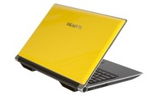
Del mismo modo, refiriéndome a grandes especificaciones, tenemos a la Gigabyte P2542G, una portátil (creo que aún podemos clarificarla de esa manera) que llega con pantalla de 15.6 pulgadas y hace alarde de resolución en Full HD (1920 x 1080 píxeles). A partir de este punto se pone en duda su portabilidad pues integra la gama de Ivy Bridge, peso pesado, Core i7, gráficas GeForce GT 640 también con 2GB de memoria dedicada, almacenamiento de hasta 750GB y unida Blu-ray para aprovechar la resolución de la pantalla y la calidad de audio con certificación THX. Por otro lado también cuenta con una salida HDMI si la pantalla se queda corta y un par de puertos USB 3.0.
Ambas tienen en común que pueden ser enviados con almacenamiento en unidades de estado sólido (SSD) o discos duros (HDD) que por supuesto elevarán o disminuirán el precio dependiendo de la elección. El precio, al igual que la fecha de salida no se han revelado, esperemos que esté disponibles cuando Intel se decida a lanzar los nuevos procesadores.
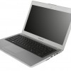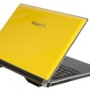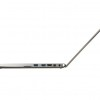
Tue, 06 Mar 2012 01:08:11 GMT
Samsung Galaxy S III tendrá que esperar a mayo
Samsung Galaxy S III tendrá que esperar a mayo
Samsung se lo ha estado oliendo y ha decidido dejar el lanzamiento más fuerte del año a después de que Apple lance el iPad 3. Aunque hay miles de rumores sobre como será el próximo Galaxy S II, aun ni siquiera hay información oficial de cuando se presentará el nuevo superventas de Samsung. Un tweet de Samsung en su cuenta coreana ha confirmado que será vía Twitter cuando se haga oficial la presentación y lanzamiento del Samsung Galaxy S III. El tweet viene a decir algo así como que la...

Samsung se lo ha estado oliendo y ha decidido dejar el lanzamiento más fuerte del año a después de que Apple lance el iPad 3. Aunque hay miles de rumores sobre como será el próximo Galaxy S II, aun ni siquiera hay información oficial de cuando se presentará el nuevo superventas de Samsung.
Un tweet de Samsung en su cuenta coreana ha confirmado que será vía Twitter cuando se haga oficial la presentación y lanzamiento del Samsung Galaxy S III. El tweet viene a decir algo así como que la fecha concreta de su presentación se hará en exclusiva vía Twitter.
Este terminal que incluirá una pantalla de 4,8 pulgadas con resolución Full HD y el nuevo procesador Exynos quad-core de 1.5GHz, se presentará en la primera mitad del año, justo después del lanzamiento del iPad y mucho antes del lanzamiento del nuevo iPhone, ya que estos tres productos son ahora mismo el tridente de productos de mejor tecnología y acabado que puedes encontrar en el mundo móvil.
Febrero es del Mobile World Congress, Marzo es del iPad, abril queda demasiado cerca del iPad ya que se presenta y se lanza en el mismo mes, parece que a Samsung lo que le queda es mayo.
Vía: BGR
Mon, 05 Mar 2012 23:12:48 GMT
H6500: el proyector para home theaters de Acer
H6500: el proyector para home theaters de Acer
Acer no es que suela ser la primera opción a la hora de montarse un sistema de cine en casa emulando una sala cinematográfica, pero su último equipo ha sumado muchos puntos para que los tengamos en cuenta. Y no es para menos, puesto que el nuevo proyector Acer H6500 cuenta con todo lo imprescindible que le podemos pedir a un equipo proyector para ver buen cine en casa. Y es que este Acer H6500 basado en un sistema de proyección DLP, cuenta con resolución nativa 1080@24p, por lo que...
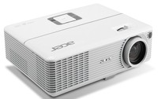
Acer no es que suela ser la primera opción a la hora de montarse un sistema de cine en casa emulando una sala cinematográfica, pero su último equipo ha sumado muchos puntos para que los tengamos en cuenta. Y no es para menos, puesto que el nuevo proyector Acer H6500 cuenta con todo lo imprescindible que le podemos pedir a un equipo proyector para ver buen cine en casa.
Y es que este Acer H6500 basado en un sistema de proyección DLP, cuenta con resolución nativa 1080@24p, por lo que no tendrás problemas a la hora de proyectar películas a frecuencias nativas de cine. Con una potencia de hasta 2100 lúmenes, no habrá habitación que se le resista, sobre todo si tenemos en cuenta que podremos lograr pantallas de hasta 300 pulgadas sin que se se inmute y que cuenta con doble toma HDMI y hasta VGA. A ello hay que añadirle además una relación de contraste de 10.000:1.
Interesante añadir que cuenta con tecnologías eColor Boost II+ y ColorSafe II, que mejoran el tratamiento y la fidelidad de los colores proyectados. Como también es interesante el hecho de que cuenta con la posibilidad de proyectar en paredes pintadas de forma que ajusta el balance para asegurar colores perfectos en cualquier superficie. El equipo ya está disponible (por el momento en territorio norteamericano), con un precio recomendado de $899.
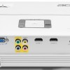
Mon, 05 Mar 2012 21:01:44 GMT
La tablet de Google fabricada por ASUS, Tegra 3 “inside”, según fuentes de la industria
La tablet de Google fabricada por ASUS, Tegra 3 “inside”, según fuentes de la industria
Desde el año pasado circula por la red un “rumor” que sitúa a Google como “fabricante” de tablets, después de atreverse con los smartphones con su línea de terminales Nexus, algo que se vió sostenido por las declaraciones del siempre polémico Eric Schmidt en el mes de diciembre en las que aseguraba que su compañía tendría una tablet propia en el mercado durante la segunda mitad de 2012. El asunto se sigue concretando, tras varios movimientos de Google, y ahora varias fuentes cercanas a la industria han asegudaro a AndroidAndMe...
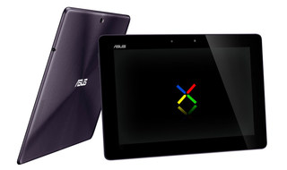
Desde el año pasado circula por la red un “rumor” que sitúa a Google como “fabricante” de tablets, después de atreverse con los smartphones con su línea de terminales Nexus, algo que se vió sostenido por las declaraciones del siempre polémico Eric Schmidt en el mes de diciembre en las que aseguraba que su compañía tendría una tablet propia en el mercado durante la segunda mitad de 2012. El asunto se sigue concretando, tras varios movimientos de Google, y ahora varias fuentes cercanas a la industria han asegudaro a AndroidAndMe durante el Mobile World Congress, que ASUS sería la encargada de fabricar Nexus Tablet, utilizando el chip de cuatro núcleos desarrollado por NVIDIA, Tegra 3.
Las fuentes, que quieren permanecer anónimas, apoyan la creencia de que la nueva Nexus Tablet, o Google Play, si la serie de registros de dominios llevada a cabo por Google tiene algo que ver con el asunto, sería un dispositivo de 7 pulgadas con resolución 1280x800 pixels que vendría a competir con la archifamosa Amazon Kindle Fire, y llegaría durante el mes de junio, o quizás en julio. El dispositivo, con la específica misión de arrebatar el trono del tamaño compacto a Amazon, tendría un precio en el mercado de US$199, lo cual sería junto al renombre de Google y ASUS, que goza de una gran popularidad en este negocio gracias a su serie Transformer, el principal atractivo del producto a la hora de encontrar un sitio de honor en las estanterías de las tiendas.
La idea de que ASUS se la encargada de desarrollar este concepto es bastante interesante; la compañía taiwanesa cuenta con numerosas tablets de éxito en el segmento de las 10 pulgadas, pero hasta ahora no ha obtenido resultados favorables en tamaños inferiores, donde sólo cuenta con un dispositivo, que pasa más bien desapercibido tanto desde los medios como en el terreno comercial. Sin un “conflicto de intereses” por delante, la colaboración podría ser especialmente fructífera para el fabricante asiático, que podría lucir el nombre de Google de manera oficial en uno de sus productos, asegurándose con ello levantar el interés de usuarios y prensa. Si alguien ha de fabricar una “Nexus Tablet”, la candidata ideal es sin duda ASUS.
Ahora, aunque el propio gigante americano Google ya ha “confirmado” que está muy interesada en producir una tablet propia que siente las bases para futuros dispositivos del mismo tipo, ya hemos oido en otras ocasiones la misma cantinela, así como de costumbre aconsejo tomar cualquier información que provenga de “fuentes cercanas a la industria” con cierto grado de escepticismo, ante la posibilidad de que se tuerza el asunto y no sea este año el elegido por Google para que su Nexus Tab asalte el mercado. Ice Cream Sandwich, Jelly Bean, Lima Pie, ¿qué sabor elegirá la compañía para su primera tablet?